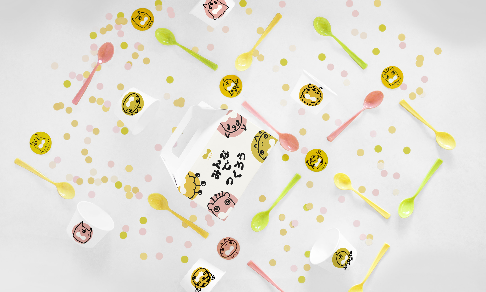
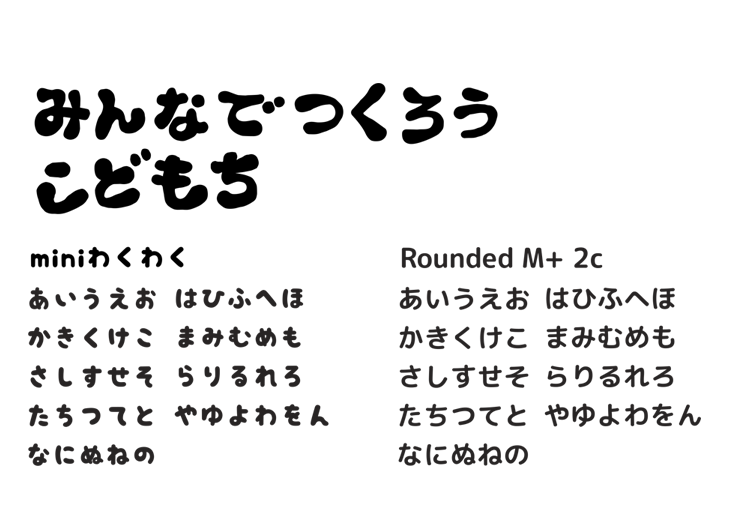
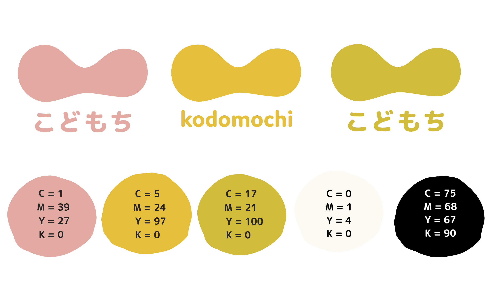
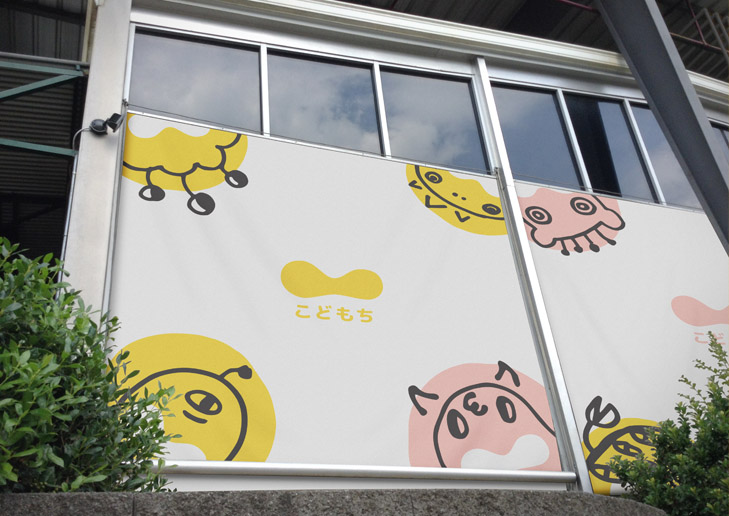
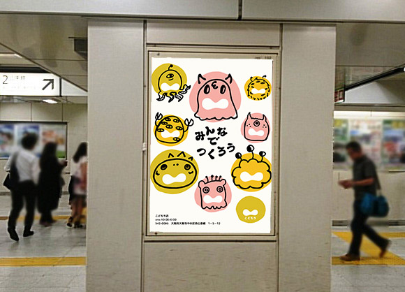

Kodomochi
Shop Branding
Kodomochi is an imagined mochi (Japanese rice cake) shop in Osaka, Japan. The name combines the words kodomo (child) and mochi, as everyone is encouraged to play and build their own mochi monster as a child would.
Rounded forms reflect the shape of hand molded mochi. With the theme of create-your-own mochi, the main imagery is of monsters, as the patrons are to ‘frankenstein’ together their own creation. The monsters are hand drawn, and contribute to the playful and imaginative theme of the shop. Pink, yellow, and green are all taken from traditional colors of mochi.
Unique, hand created blob Japanese typeforms used throughout continue the image of stretched mochi.
Unique, hand created blob Japanese typeforms used throughout continue the image of stretched mochi.



